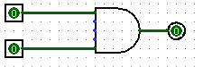

Preparation
Launch the Logisim application to begin. To do this, type 'logisim'
You can learn about Logisim beyond the scope of this lab (or download it to use at home) from the Logisim website.
Exercises
Part 0: The Basics (Warm-Up)
We'll begin by creating a very simple circuit just to get the feel for placing gates and wires.
 Start by clicking
the "AND gate" button. This will cause the shadow of an AND gate
to follow your cursor around. Click once within the main schematic window to
place an AND gate.
Start by clicking
the "AND gate" button. This will cause the shadow of an AND gate
to follow your cursor around. Click once within the main schematic window to
place an AND gate. Click the "Input Pin" button.
Now, place two input pins somewhere to the left of your AND gate.
Click the "Input Pin" button.
Now, place two input pins somewhere to the left of your AND gate. Click the "Output Pin" button.
Then place an output pin somewhere to the right of your AND gate. Your
schematic should look something like this at this point:
Click the "Output Pin" button.
Then place an output pin somewhere to the right of your AND gate. Your
schematic should look something like this at this point:

 Click the "Select tool"
button. Click and drag to connect the input pins to the left side of the AND
gate. This will take several steps, as you can only draw vertical and
horizontal wires. Just draw a wire horizontally, release the mouse button,
then click and drag down starting from the end of the wire to continue
vertically. You can attach the wire to any pin on the AND gate on the left
side. Repeat the same procedure to connect the output (right side) of the
And Gate to the LED. After completing these steps your schematic should look
roughly like this:
Click the "Select tool"
button. Click and drag to connect the input pins to the left side of the AND
gate. This will take several steps, as you can only draw vertical and
horizontal wires. Just draw a wire horizontally, release the mouse button,
then click and drag down starting from the end of the wire to continue
vertically. You can attach the wire to any pin on the AND gate on the left
side. Repeat the same procedure to connect the output (right side) of the
And Gate to the LED. After completing these steps your schematic should look
roughly like this:
  Finally, click the "Poke" tool
and try clicking on the input pins in your schematic. Observe what happens.
Does this match with what you think an AND Gate should do?
Finally, click the "Poke" tool
and try clicking on the input pins in your schematic. Observe what happens.
Does this match with what you think an AND Gate should do?
Part 1: Sub-Circuits
Just as C programs can contain helper functions, a schematic can contain subcircuits. In this part of the lab, we will create several subcircuits to demonstrate their use.
- Create a new schematic (File->New) for your work.
- Create a new subcircuit (Project->Add Circuit ). You will be prompted for a name for the subcircuit; call it NAND.
- In the new schematic window that you see create a simple NAND circuit with 2 input pins on the left side and an output pin on the right side. Do this without using the built-in NAND gate from the Gates folder.
- Go back to your "main" schematic by double-clicking "main" in the circuit selector at the left of the screen. Your original (blank) schematic will now be displayed, but your NAND circuit has been stored.
- Now, single click the word "NAND" in the list. This will tell Logisim that you wish to add your "NAND" circuit into your "main" circuit.
- Try placing your NAND circuit into the "main" schematic. If you did it correctly, you should see a gate with 2 input pins on the left and one output pin on the right. Try hooking input pins and output pins up to these and see if it works as you expect.
- Repeat these steps to create several more subcircuits: NOR, XOR, 2 to 1 MUX, and 4 to 1 MUX. Do not use any built in gates other than AND, OR, and NOT. However, once you've built a subcircuit, you may use it to build others.
Hint: Try writing a truth table. You might also find the lecture slides useful for a refresher on how to build these. You may want to consider using some of your custom subcircuits when designing the others.
Checkoff
- Show your five circuits (NAND, XOR, 2 to 1 MUX, and 4 to 1 MUX) to your TA.
Part 2: Storing State
Let's implement the circuit we've been talking about in lecture, that increments a value ad infinitum. The difference between this circuit and the circuits you've built for lab so far is that you need some registers. The following will show you how to add registers to your circuit.
- Create a new subcircuit (Project->Add Circuit). Name this new subcircuit, AddMachine.
- Load in the Arithmetic Library if it is not already loaded (Go to Project->Load
Library->Built in Library and select "Arithmetic"). This library contains elements
that will perform basic mathematical operations. When you load the library, the circuit
browser at left will have a new "Arithmetic" folder.

- Select the adder subcircuit from the "Arithmetic" library and place the adder into your AddMachine subcircuit.
- Load in the Memory Library (Go to Project->Load Library->Built in Library and select "Memory"). This library contains memory elements used to keep state in a circuit. A new "Memory" folder will appear in the circuit browser.
- Select the register from the "Memory" folder and place one register into your
subcircuit. Below is an image diagraming the parts of a register.

- Connect a clock to your register. You can find the clock circuit element in the "Wiring" folder in the circuit browser.
-
Connect the register and adder together based on the diagram from lecture.
You may notice that when you connect the adder to a register, you will get a "Incompatible widths" error. This means that your wire is trying to connect two pins together with different bit widths. If you click on one the adder with the "Selection" tool, you will notice that in the box below circuit browser will have a field called "Data Bit Width". This field controls the number of bits the the adder will add. Change this field to 8 and the "Incompatible widths" error should now go away.
In general, the box below the circuit browser will list the properties of a given circuit element. Other circuit elements will have other properties.
-
Wire a constant 8-bit 1 to the second input of the adder. You can find the "constant" circuit element in the "Wiring" library.
-
Add two output pins to your circuit so that you may monitor what comes out of the adder and the register. Thus, by the end, your circuit should look like as follows:
Now let's see if you built your circuit correctly.
- Go back to the "main" subcircuit by double clicking on "main" in the circuit browser.
- Single click on your "AddMachine" circuit to select it.
- Change the "Facing" property to another direction. Any circuit with the "Facing" property can be rotated to accomodate wires as you need them. This will definately be useful when you do your project.
- Place your AddMachine subcircuit into the main subcircuit.
- Select the AddMachine subcircuit you just placed into main.
- Connect output pins to the AddMachine subcircuit. Output pins are ordered top to bottom, left to right. Thus, if you followed the schematic above, then the top pin on the right side outputs the value of the adder, and the bottom pin is the output of the register.
-
Right click on your AddMachine subcircuit, and select "View AddMachine. This is the ONLY method to preserve state. Double-clicking on the circuit at the circuit browser at left makes logisim think you want to edit the circuit instead of just checking what state the circuit has.
Note: You can use Simulate->Go In To State->*Circuit Name*, but that allows you go into the first circuit of that type. If you placed two Fib8 circuits down, it only takes you to the first Fib8 circuit to put down.
- Initialize the register value to 1. You can do this by first, clicking on the register value with the poke tool. Then, type the hex value in.
- To return to the main circuit while preserving state, go to Simulate->Go Out To State->main. Alternatively, you can hold the Command key (control on windows) and press Up-Arrow.
- Now start running your circuit by going to Simulate->Ticks Enabled. Your circuit should now be outputting a counter in binary form.
- If you want to run your circuit faster, you can change the tick frequency in Simulate->Tick Frequency.
Checkoff
- Show your AddMachine circuit to your TA.
Part 3: FSMs to digital logic
Now we're ready to do something really cool; translate a FSM into a digital logic circuit.
If you've been paying attention in lecture you've noticed that the circuit we built in part 2 looks eerily similar to the diagram of a general FSM circiut. We're going to modify our circuit to implement the following FSM:
If two ones in a row or two zeroes in a row have ever been seen, output zeros forever. Otherwise, output a one.
-
Note that the FSM is implemented by the following diagram:

-
Observe that the following is a truth table for the FSM:
st1 st0 input | next st1 next st0 output 0 0 0 | 0 1 1 0 0 1 | 1 0 1 0 1 0 | 1 1 0 0 1 1 | 1 0 1 1 0 0 | 0 1 1 1 0 1 | 1 1 0 1 1 0 | 1 1 0 1 1 1 | 1 1 0 -
We've provided you with a starter Logisim circuit to start out.
$ cp -r ~cs61c/labs/05 ~/lab5 -
Note that the top level of the circuit looks almost exactly the same as our previous adder circuit, but now there's a FSMLogic block instead of a adder block. FSMLogic is the combinational logic block for this FSM. We have handled the output bit for you, as it's the most complicated to simplify and implement. You should complete the circuit by completing the StateBitOne and StateBitZero subcircuits.
You could go from the truth table to SOP to a circuit, or you could notice that for each state bit, there are only two situations in which it is zero. This could make your life easier if you think a bit outside the box...
Checkoff
- Show your StateBitZero circuit to your TA and demonstrate that it behaves correctly.
- Show your StateBitOne circuit to your TA and demonstrate that it behaves correctly.